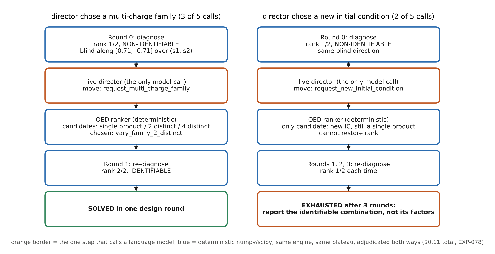
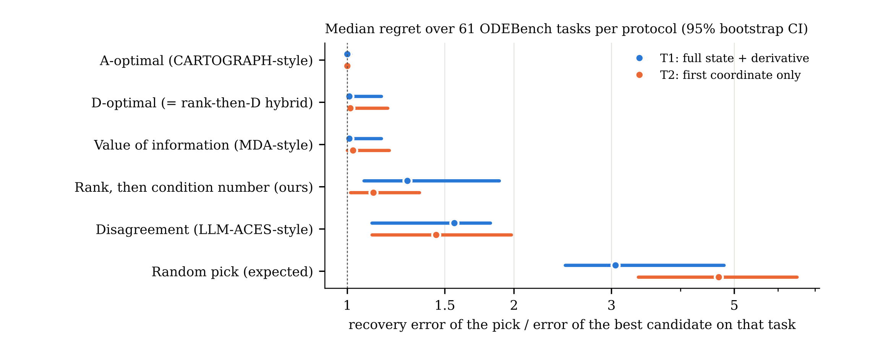
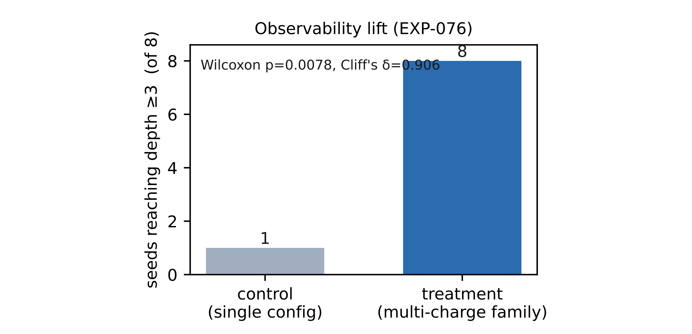
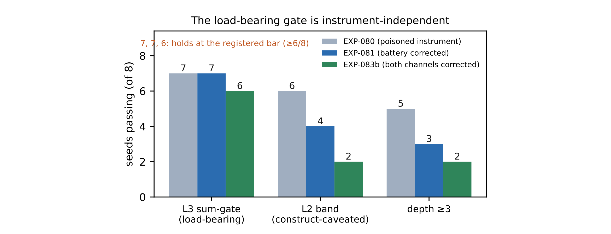
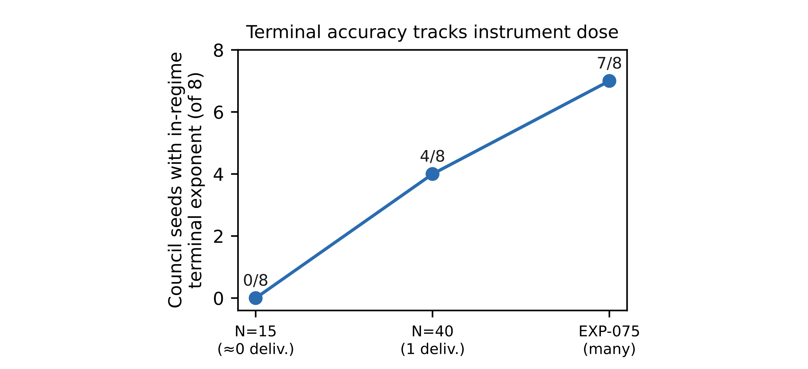
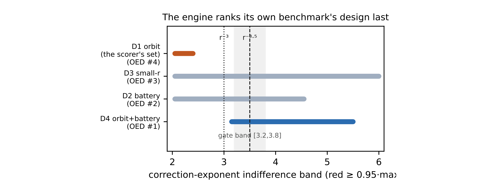

LLM-IDEA：用可辨识性计算指导科研智能体选择实验
论文原文 ↗Surya Shetty、Ulisses Braga-Neto，LLM-IDEA: Identifiability-Driven Experimental Agent for Autonomous Discovery of Mechanistic World Models，arXiv，2026。论文页面 · · 代码
自主科学家遇到进展平台期时，需要知道该继续搜索、改进同类实验，还是换一种测量。问题有时来自推断能力，有时来自实验本身提供的信息：不同参数可能始终产生同一条观测曲线。LLM-IDEA 将可辨识性引擎接入发现循环，让智能体通过计算判断实验能区分哪些未知量，并选择能提供新独立信息的行动。
方法怎么做：从机制参数到信息诊断，再到新实验
可辨识性问的是，不同机制参数能否产生可区分的观测。论文以单室口服药代动力学模型给出具体例子：已知给药量和一组血药浓度时间点，未知量包括吸收、消除速率、分布体积 V 和生物利用度 F。口服浓度幅度含 F/V，同步放大两者仍得到相同浓度，因此这种实验首先约束的是参数组合。
引擎计算每个参数变化对各观测的影响，形成敏感度矩阵。矩阵的每列代表一个参数在整组数据中的作用，秩表示可分开的独立参数方向。该例四个未知量只有三个独立方向，引擎找到 F 与 V 的共同缩放；再把时间等设计变量保留为符号，检查这种不变性是否贯穿整个允许实验类。
增加口服采样密度或延长口服观察窗口仍为秩 3；加入静脉给药臂后，进入循环比例已知为 1，体积得到独立约束，合并观测达到秩 4。候选实验排序由此推荐静脉给药。流程从机制与观测出发，经过敏感度、混淆方向、实验类诊断，最后选出能够打破混淆的干预，并用新数据重新推断。
语言模型负责提出机制假设和组织行动，确定性程序负责敏感度、符号检查与设计排序。引擎输出三类平台期判定：已有实验信息足够，继续改进推断；当前观测不足，但允许的设计可以解决；或整个实验类的相关方向都不提供信息，需要改变测量类别或使用可辨识组合。秩之外，条件数还描述参数方向的强弱差异，帮助判断有限噪声下的估计困难。
作者构建 Alien Universe 两体环境，将这一诊断接入智能体循环。观测包括位置、速度、质量和可选择的实验设计，力律含有短程修正与隐藏属性作用。单一属性组合下，多个效应可能合并成一个幅度；换成共享力律、属性组合不同的系统族，跨系统变化便提供新的约束。
原图 1：两物体具有质量及隐藏属性，距离和方向决定运动。改变初始状态与改变属性组合的系统族，提供不同类型的信息。
智能体共享机制假设和实验结果，选择继续改变初始条件，或请求新的属性组合；排序器再从可选设计中挑选恢复信息的方案。在平台期演示中，选择系统族的分支通过两个不同属性乘积恢复满秩，形成诊断—行动—新观测—重新诊断的闭环。

原图 4：语言模型选择实验方向，确定性引擎诊断并排序具体设计；左右分支展示改变实验类别与继续同类实验的不同进展。
主要结果：区分三类平台期，并检验发现评分所需的信息
**标准动力学任务中，诊断能够定位不同停滞原因。**ODEBench 的 62 个含自由常数系统中，60 个在初始观测下即可辨识；RC 电路的参数只以组合形式出现，所有协议允许的实验都保留相同混淆；种群增长与捕获模型则能通过新增初始条件改善。引擎还复现 Lotka–Volterra、Van der Pol、Lorenz 等已知模型的判定，并给出前述药代模型的静脉给药建议。
恢复独立信息之后，实验设计还能进一步追求估计精度。作者比较不同候选选择准则，在噪声数据上拟合参数，A-optimal 等成熟设计准则取得较好的恢复精度。这使“获得足够信息”和“把参数估得更准”成为可以顺序处理的两个问题。

原图 7：横轴为所选设计的参数恢复误差与任务最佳候选误差之比，越接近 1 越好；比较不同观测协议下的实验选择准则。
**可辨识的实验协议提高了自主发现深度。**Alien Universe 中，采用可辨识系统族协议的 LLM-IDEA 在 8/8 个种子上达到至少三级发现深度，对照为 1/8。智能体利用跨配置变化识别隐藏属性效应，把更多观测转化为更深层的力律解释。

原图 2：单系统与多属性系统族在发现深度上的比较，显示提供可区分信息的实验协议如何帮助机制发现。
第二个模拟世界改变隐藏属性的组合方式和短程修正，作者继续比较隐藏效应、指数层级和总体深度。反馈次数实验则显示，拟合引擎提供更多有效反馈时，智能体更常得到正确指数区间。它们共同展示诊断、实验协议和定量工具如何进入发现过程。

原图 3：比较不同反馈配置下的隐藏效应层级、指数层级及整体发现深度。

原图 6：不同引擎反馈量下，终末指数进入正确区间的比例发生变化，连接工具反馈与机制参数发现。
**可辨识性也能判断基准要求是否由实验支持。**引擎将作者自己深度评分器采用的观测设计排在四种设计的最后；其他设计提供了更有约束力的指数信息。在 DiscoverPhysics 的两个公开世界中，它进一步找出严格重参数化的解释：在所有合法实验下，分数阶算子与一种普通幂律给出等价结果，而评分规则奖励其中一种命名。
对应这两个世界，轨迹准确的 15 个模型—世界结果单元全部未通过解释分；可辨识世界为 9 个中 5 个未通过。这一结果说明，机制发现评价需要让实验可区分的信息与评分要求相对应。

原图 5：各横条为不同观测设计所允许的近似等效指数范围，灰带为评分接受区间，展示观测方案怎样影响对指数的约束。
领域贡献：让科研智能体计算下一步需要什么信息
LLM-IDEA 将机制发现的平台期从笼统的失败，转化为三种可采取不同措施的计算判定。敏感度与符号分析指出混淆方向，候选设计提供新的约束，实验类证明则帮助选择不同类型的干预。它也把同一思路用于发现基准，要求机制评分与实验可区分的信息相对应。自主科学家由此能够更有依据地决定何时多搜索、何时改实验，以及何时换一种观察世界的方式。
原始摘要完整中文译文
大型语言模型智能体正越来越多地被部署为自主科学家，在极少人工监督下设计实验并推断机制性世界模型。然而，可辨识性常被忽略：当进展进入平台期时，智能体需要知道，究竟是自己的能力还不够，还是模型根本无法由这些数据辨识；在后一种情况下，无论再做多少同类实验都没有帮助。我们提出可辨识性驱动实验智能体 LLM-IDEA，用于闭环发现，并配备可辨识性引擎，对平台期给出三类判定：能力限制、可在设计类别内解决，或经证明该类别已无法提供所需信息。在 ODEBench 上，具有自由常数的 62 个系统中，60 个在第零轮即可辨识；对 RC 电路，其协议能运行的每一种实验都被证明无法解决，而一个种群增长与捕获（harvesting）模型则可通过增加一个初始条件解决。可辨识性引擎复现了 Lotka–Volterra、Van der Pol、Lorenz 和一个药代动力学模型的已知判定；对药代模型，它推荐药理学家使用的静脉给药臂，并将我们自身基准的深度评分器所用观测设计排在四种设计的最后。在 DiscoverPhysics 基准上，它找出两个公开世界，其解释评分规则奖励一种任何合法实验都无法辨别的区别；在这些世界中，每个轨迹准确的模型都未通过解释评分（15 个中 15 个；可辨识世界则是 9 个中 5 个，p=0.012）。在我们提出的两体测试环境 Alien Universe 中，力律可以在经证明不可辨识与可辨识的协议间切换；采用可辨识协议时，LLM-IDEA 在 8/8 个种子上达到至少 3 的发现深度，未采用它时为 1/8。因此，自主发现智能体可以通过计算，而非猜测，判断一个平台期需要的是更多搜索、更好的同类实验，还是不同类别的实验。